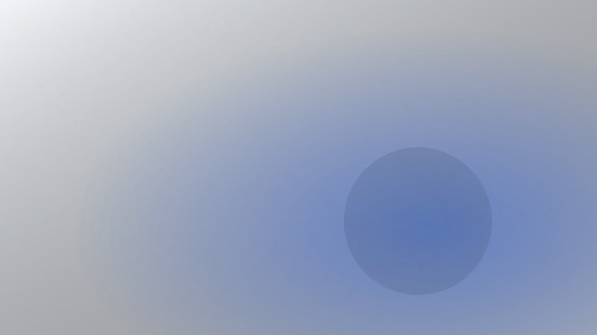
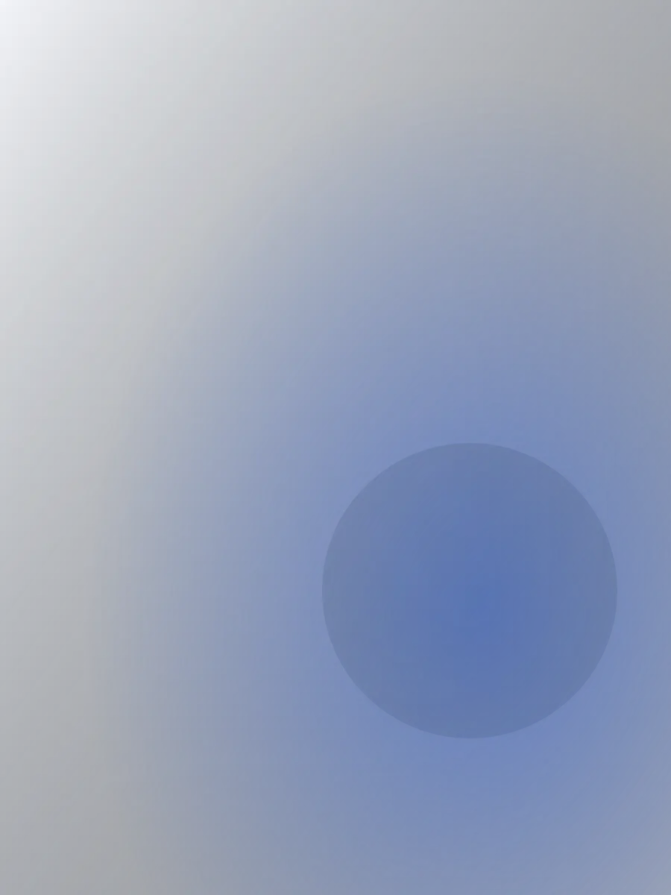

Ремонт телефонов в {{город}} от {{срок-ремонта}}
Срок и цену называем до начала работ, цены основных ремонтов – на сайте. Заявка занимает минуту.
Ремонт без срока – это ожидание без конца
«Через пару дней» – без даты
Телефон нужен сегодня: звонки, банк, фото. Когда он будет готов, никто не сказал, а торопить неловко.
Цена называется после разбора
Телефон уже вскрыт, экран снят. Спорить о сумме поздно: соглашаетесь на любую, лишь бы вернули рабочий.
Страшно оставить телефон с данными
Фото, переписки, банковские приложения. Что с ними будет у чужого мастера, никто не объяснил.
Срок называем до начала работ и держим его. Цены на основные ремонты висят ниже. Без вашего «да» не делаем ничего.
От заявки до выдачи – один отсчёт
Срок называем до начала работ и держим его. Вот из чего он складывается.
Срок сдвинулся – звоним сами
Не нужно звонить первыми: если срок меняется, скажем сразу и объясним, почему.
- ЗаявкаЦена и срок по вашей модели и поломке{{время-ответа}}
- ДиагностикаПоказываем, что сломано, и согласуем{{время-диагностики}}
- РемонтДелаем ровно то, что в актепо акту
- ВыдачаПроверяем при вас и отдаём телефон{{срок-ремонта}}
Четыре шага, и на каждом – ваше «да»
Без него не разбираем телефон дальше и не добавляем ни одной позиции в сумму.
-
Заявка
Оставили заявку – ответим ценой и сроком
Напишите модель и что случилось. Ответим, сколько стоит основной ремонт и когда будет готов. Диагностика занимает {{время-диагностики}}.
-
Согласование
Показываем, что сломано, и называем цену
Покажем неисправный узел и что именно меняем. Запчасть выбираете вы: оригинал или аналог. Без вашего «да» ничего не делаем.

-
Ремонт
Делаем ровно то, что в акте, и в названный срок
Срок называем при согласовании. Всплыло что-то по ходу – звоним и спрашиваем, а не решаем за вас.
-
Выдача
Проверяем при вас и отдаём телефон
Включаем и проверяем то, что чинили. Вы видите, что сделано, а не верите на слово.

Цены на основные ремонты – на сайте
Ориентиры по основным поломкам. Точную сумму называем по модели и поломке до начала работ, после согласования она не меняется.
Экран и корпус
- Замена экранаДисплей в сборе, проверка касания и яркостиуточнить
- Замена задней крышкиСтекло или корпус, по моделиуточнить
- Замена стекла камерыЕсли камера работает, а снимки с пятномуточнить
- Защитное стеклоУстановка, без пузырейуточнить
Внутри
- Замена аккумулятораЕсли телефон быстро садится или выключаетсяуточнить
- Замена разъёма зарядкиЕсли зарядка держится только в одном положенииуточнить
- Замена камерыОсновной или фронтальной, по моделиуточнить
- Замена динамика и микрофонаЕсли собеседник вас не слышит или вы егоуточнить
Диагностика – уточнить, занимает {{время-диагностики}}. Нетиповую поломку оцениваем на диагностике до начала работ и делаем только с вашего согласия.
Оставьте заявку на ремонт
Напишите модель и что случилось. Ответим за {{время-ответа}}: назовём срок и цену до начала работ.
Отвечаем в часы работы. Не любите писать – звоните, срок и цену назовём по телефону.